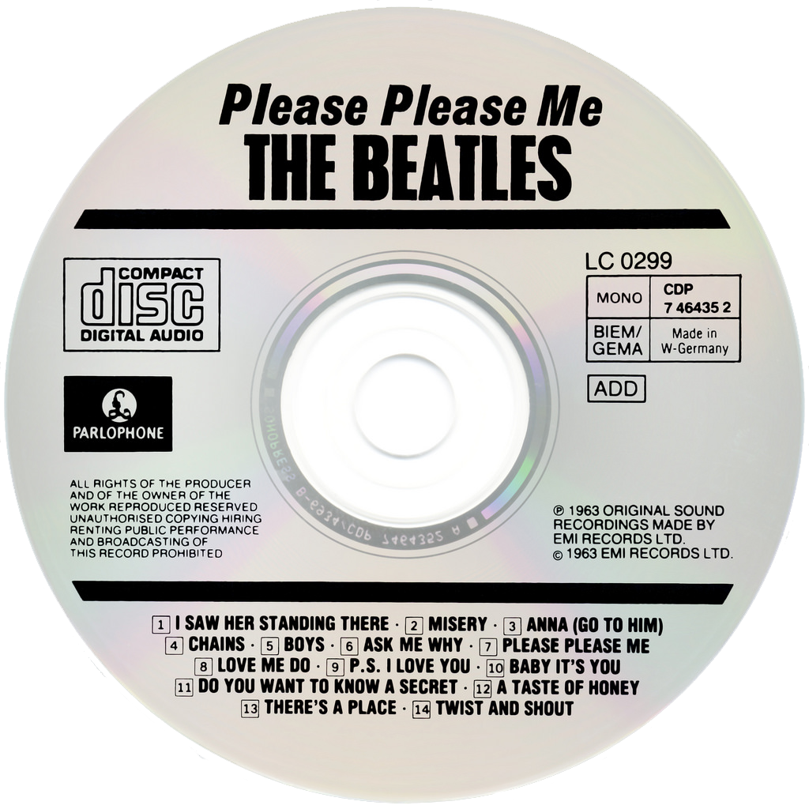
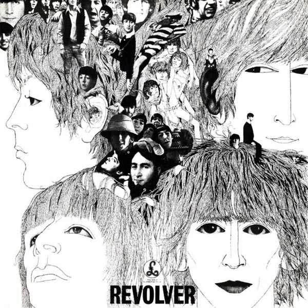
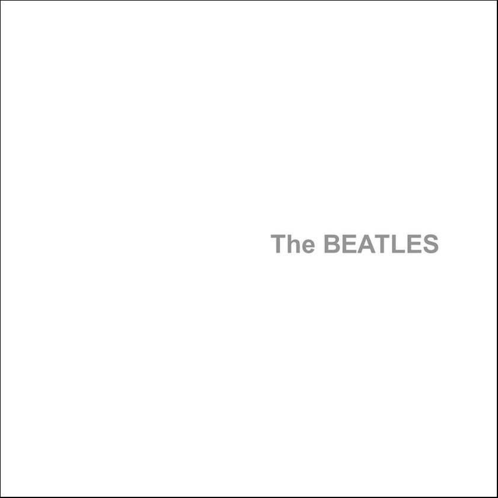

History of the Beatles by Victor Cui
-

The Beatles' debut album
March 22, 1963
The Beatles recorded 10 of the 14 songs on Please Please Me in just over 12 hours
Please Please Me contains the most covers the Beatles' have ever done, including popular Motown songs like the Shirelles' "Boys" and Arthur Alexander's "Anna"
Of the album's 14 songs, eight were written by John Lennon and Paul McCartney. The dynamic duo would gain songwriting fame, branding themselves as Lennon-McCartney
Fun Fact: "Twist and Shout", the last song recorded, had John Lennon singing lead vocals. However, Lennon suffered from a nasty cold, which made his voice hoarse and grainy. Even so, he produced a memorable vocal performance: a raucous, dynamic rocker
Hover over the CD to zoom in
-

The Beatles arrive at JKF airport in New York
February 07, 1964
When Pan Am Flight 101, carrying the four Beatles, touched down in Queens, Beatlemania had officially begun. It was the Beatles' first time in America, launching an influx of British culture and music in American society. The Beatles' debut was the most-watched program in U.S. history, watched by 45% of the U.S. population
Two days later, the Beatles performed live on the Ed Sullivan Show, which was watched by ~ 73 million Americans. When Ed Sullivan introduced the band, he was immediately drowned out by girls screaming in the audience. In many ways, the Beatles were the first international boy band
Four months later, the Beatles released their 3rd album, A Hard Day's Night. All 13 tracks were written by Lennon-McCartney, showcasing the rapid progression of their songwriting abilities
Hover over the picture to zoom in
-

The first Beatles Masterpiece
Date
December 3, 1965
Rubber Soul was the first time that the Beatles focused on creating an album as an artistic work. It incorporated elements of pop, soul, folk, and even indian music. George Harrison's sitar on Norwegian Wood was the first time the instrument was used in a pop song
The Beatles were introduced to drugs during the making of the album, so the first elements of psychedelism pops up in songs like Nowhere Man and What Goes On. Ringo said that experimentation on the album was heavily influenced by marijuana
The Beatles went from a clean-cut boy band mostly composing love songs directed at teenage girls to a grown-up band capable of writing philosophically-oriented songs like Nowhere Man and the wonderfully ethereal In My Life
Produced George Martin described Rubber Soul as the first album to present a new, growing Beatles to the world
-

The Beatles take a lot of acid
Date
August 5, 1966
Revolver was the album that cemented the Beatles' legacy. It marked a huge progression from the previous year's Rubber Soul in terms of style and experimentation
The album's sounds include tape loops and backwards recordings on Tomorrow Never Knows, a classical string octet on Eleanor Rigby, and Indian background music on Love You To
The albums psychedelic sound was heavily influenced by the Beatles copious use of LSD during the recording of the album, a habit that band kept well-hidden from the public. John Lennon in particular became addicted to the drug.
George challenged the Lennon-McCartney songwriting dominance with three brilliant songs written by him, Taxman, I Want to Tell You, and Love You To
-

The Beginning of the End
Date
November 22, 1968
Most of the songs on the White Album were written during March and April 1968 at a Transcendental Meditation course in Rishikesh, India. During recording sessions, arguments broke out among the Fab Four, among over both petty things and creative differences.
The arguments became so intense and frequent that Ringo left the band briefly in August 1968. The tensions proved to be ongoing: the breakup of the Beatles had begun
At the same time, the creative tension within the band resulted in one of the most adventurous and intense rock albums ever
Ringo Starr wrote his first original song on this album, the country-tinged Don't Pass Me By
Fun Fact: The White Album is by far the longest Beatles album
-
List of Resources: Wikipedia Articles on the Beatles, Rolling Stone reviews of the Beatles
Sources: Wikipedia, Rolling Stone